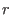
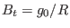
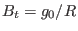
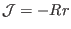
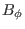

Assume magnetic surfaces of a magnetic configuration are given by
and
where  is the label of magnetic surfaces (i.e.,
 ). The above parametric equations specify a series
of concentric-circular magnetic surfaces with being the minor radius.
). The above parametric equations specify a series
of concentric-circular magnetic surfaces with being the minor radius.
Assume the poloidal plasma current is zero, i.e.,
is a
constant (this constant is denoted by in the following). In this case
the toroidal magnetic field is determined by
. Assume the
 profile is given. Next, let us determine the poloidal magnetic field
profile is given. Next, let us determine the poloidal magnetic field
 , which is given by
, which is given by
which involves the poloidal magnetic flux  . Our task is to express the
poloidal magnetic flux in terms of and . Using
, we obtain
. Our task is to express the
poloidal magnetic flux in terms of and . Using
, we obtain
Integrate the above equation over , we obtain
which an be written as
where use has been made of
 . Using
 and
. Using
 and
 , the above
equation is written
, the above
equation is written
Using maxima (an open-source computer algebra system), the above integration
over  can be performed analytically, giving
can be performed analytically, giving
Using this, equation (338) is written as
which can be simplified as
Using this, the poloidal magnetic field in Eq. (335) is written
as
[Using the formulas
and
, we obtain
 and
,
 . Then Eq. (342) is
written as
. Then Eq. (342) is
written as
This is the formula for calculating the poloidal magnetic field. The magnitude
of
is written as
Note that both and  depend on the poloidal angle .]
I use Eq. (341) to compute the 2D data of  (
) on the poloidal plane when creating a numerical G-eqdsk file for the
above equilibrium.
(
) on the poloidal plane when creating a numerical G-eqdsk file for the
above equilibrium.
Subsections
yj
2018-03-09